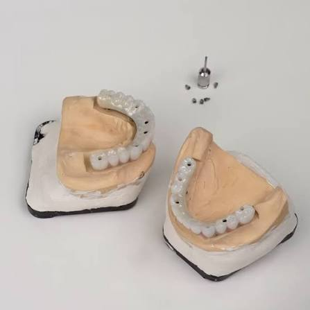
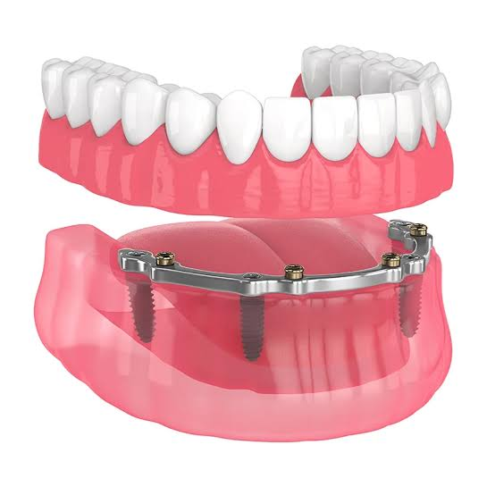

🔩 Ti-Bar ve Custom Abutment Teknolojimiz


İmplant üstü protez mühendisliğinde Karaca Dental, standart hazır parçaları tamamen reddederek hastanın kendi diş eti anatomisine ve kemik yapısına %100 uyum sağlayan kişiye özel (Custom) titanyum dayanaklar (Abutment) ve titanyum barlar (Ti-Bar) üretmektedir. Bu üretimler tamamen dijital tarama ve mikron düzeyinde hassas endüstriyel frezeleme teknolojisiyle gerçekleştirilir.
Kişiye özel tasarlanan custom abutmentlar, hazır parçaların aksine diş etinin doğal çıkış profilini taklit eder; bu sayede protez ile diş eti arasında yemek artıklarının birikmesini engeller ve peri-implantitis (implant çevresi doku iltihabı) riskini kalıcı olarak ortadan kaldırır. Çoklu implant eksikliklerinde veya All-on-4 / All-on-6 konseptlerinde kullanılan Ti-Bar sistemleri ise, çiğneme esnasında gelen dikey ve yatay yükleri implantlar arasında eşit olarak dağıtan mükemmel bir taşıyıcı iskelet görevi üstlenir. Bu sayede implant vidalarının kırılması veya gevşemesi engellenerek protezin kullanım ömrü maksimuma ulaştırılır.
⬅ Ana Sayfaya Dön